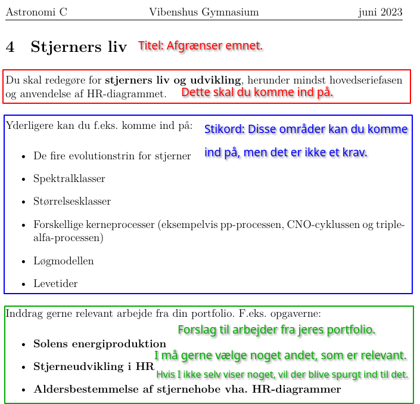
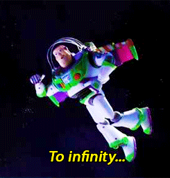

Fra læreplanen
Der afholdes en mundtlig prøve på grundlag af en bredt formuleret opgave inden for de områder, holdet har arbejdet med. Opgaverne skal tilsammen i al væsentlighed dække de faglige mål, kernestoffet og det supplerende stof. Opgaverne skal være kendte af eksaminanderne inden prøven. Den enkelte opgave må anvendes højst tre gange på samme hold.
Eksaminationstiden er ca. 24 minutter pr. eksaminand. Der gives ca. 24 minutters forberedelsestid.
Eksaminationen former sig som en faglig samtale mellem eksaminand og eksaminator. Eksaminandens astronomiske portfolio skal inddrages i eksaminationen, når det er relevant for opgaven.
Bedømmelsen er en vurdering af, i hvilken grad eksaminandens præstation lever op til de faglige mål, som de er angivet i pkt. 2.1.
Der lægges vægt på:
- fagligt overblik, herunder om eksaminanden kan inddrage relevante og væsentlige astronomiske elementer i den faglige samtale
- sikkert kendskab til fagets begreber, modeller og metoder, så eksaminanden kan foretage en faglig analyse, herunder gøre rede for den faglige argumentation
- evnen til at forbinde observationer, data og modeller som grundlag for en faglig refleksion med inddragelse af fagets perspektiver.
Der gives én karakter ud fra en helhedsvurdering af den mundtlige præstation.
Eleverne skal:
- kunne orientere sig på stjernehimlen og kunne identificere planeter og udvalgte stjernebilleder
- kunne forklare elementære astronomiske fænomener med udgangspunkt i fænomener som dag og nat, Månens faser, formørkelser, planeternes bevægelse samt årstidernes skiften
- kunne gøre rede for det moderne astronomiske verdensbillede
- kunne gøre rede for markante skift i det astronomiske verdensbillede
- kunne indhente, bearbejde og fortolke astronomiske data
- have indsigt i anvendelsen af modeller til kvalitativ og kvantitativ beskrivelse af astronomiske fænomener og processer
- kunne bearbejde en elementær astronomisk tekst og gøre rede for de benyttede faglige begreber og den faglige argumentation
- kunne søge information om et astronomisk emne fra forskellige kilder og vurdere pålideligheden
- kunne udvælge og strukturere relevante og centrale astronomiske elementer og kunne formidle astronomiske emner til en udvalgt målgruppe
- demonstrere viden om fagets identitet og metoder
- undersøge problemstillinger og udvikle løsninger, hvor fagets metoder anvendes
- kunne behandle problemstillinger i samspil med andre fag.

Pensum kan I læse i UVB'en (undervisningsbeskrivelsen). Den ligger allerede på teams, hvor I også kan finde alle de materialer, vi har arbejdet med.
Husk endeligt at vi også har bogen Det Levende Univers. De relevante kapitler og sider kan I finde i UVB'en.
